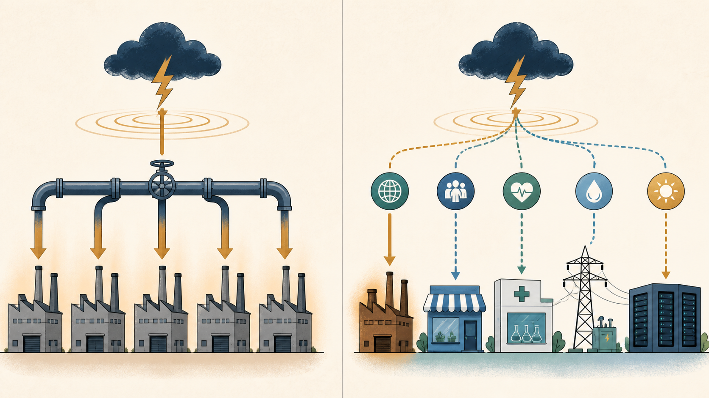

BOOK PASSAGE打开本地原书 →
成份股很多，为什么风险仍可能来自同一处
《指数基金投资指南》 · 第3章《常见指数基金品种》，PDF第55—159页；宽基与行业指数分类单元位于第56—57页，产品选择补充单元位于第63—73页
为何适合你长期指数投资资产配置风险控制专业知识讲解
核心主张：指数是否分散，不能只看成份股数量或基金数量，还要看成份公司的盈利是否受同一行业变量支配。宽基指数不限定单一行业，行业指数则集中承接特定行业的盈利驱动与政策、价格或周期冲击。
- 识别指数应先读编制方法：宽基不限制行业，行业指数会把样本限定在特定业务范围内。
- 同一行业的公司可能同时受到原材料价格、利率、监管或需求周期影响，持有多只股票也未必形成真正分散。
- 比较追踪同一指数的产品时，费用、跟踪误差、规模与持续运作能力比基金单位净值高低更有解释力；书中的具体门槛与产品列表已经过时，不能照搬。
“行业指数基金受行业特性的影响非常大。”
今天连接：今天的中国用电与美国州级就业数据都呈现总量平稳、结构分化的特征。这个概念帮助我们区分总体经济信号与单一行业暴露：局部高增长或疲弱不能直接代表全部企业。
不要这样做：阅读边界：不能用一个行业的数据替代整个市场，也不能仅因产品名称或成份股数量变多，就断言风险已经分散。

- 先确认指数是否限制行业，以及样本选择和权重规则如何定义暴露。
- 再检查成份公司的共同盈利驱动，包括商品价格、利率、监管、客户需求和收入地域。
- 最后比较实际权重与重合持仓；名称和数量只用于定位，不能单独证明已经分散。